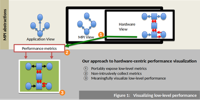
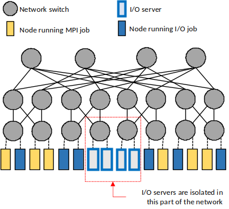

Research
TRACKING AND VISUALIZING MPI LINK TRAFFIC

Optimizing inter-process communication remains challenging while being critical for ensuring good performance. This work presents a method for undertaking performance analysis of complex communication routines, such as MPI collectives, running on large-scale InfiniBand networks. This method involves adding new events to the Peruse utility in Open MPI, tracing these events during the collective communication operation, and mapping the trace information to links within the physical network. BoxFish is then used to visualize the data in order to easily identify network bottlenecks that occur during our run. The non-intrusive tracing library incurs less than 1% application runtime overhead and our method successfully identifies points of potential contention within our network.
{kind=link}
MPI vs. I/O TRAFFIC INTERFERENCE ON FAT-TREE NETWORKS

The scale and complexities of supercomputer networks make it difficult to analyze and optimize communication performance on shared systems. This work presents an efficient method of identifying network anomalies in MPI applications through low-overhead profiling of network metrics in the MPI library and visualizing application traffic over network links. Additionally, the work presents a characterization of the interference between MPI traffic and I/O traffic on fat-tree networks, showing the interference trends of both traffic types. One recurring finding is that MPI traffic is more sensitive than I/O traffic due to an “I/O-congestion threshold”. Finally, strategies for mitigating the slowdown due to the I/O-MPI interference are evaluated and shown to be effective in improving overall performance.
{kind=link}